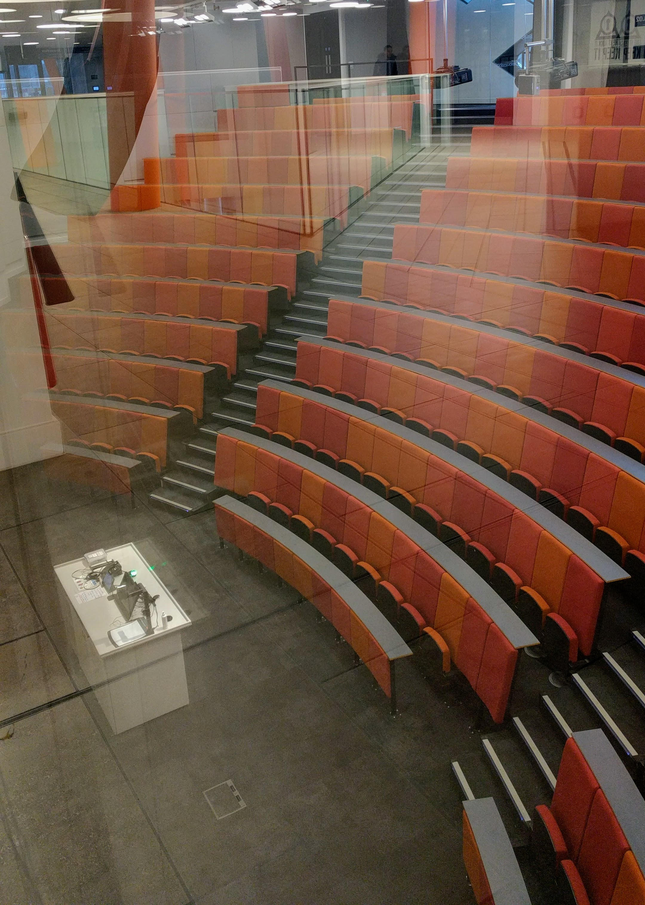
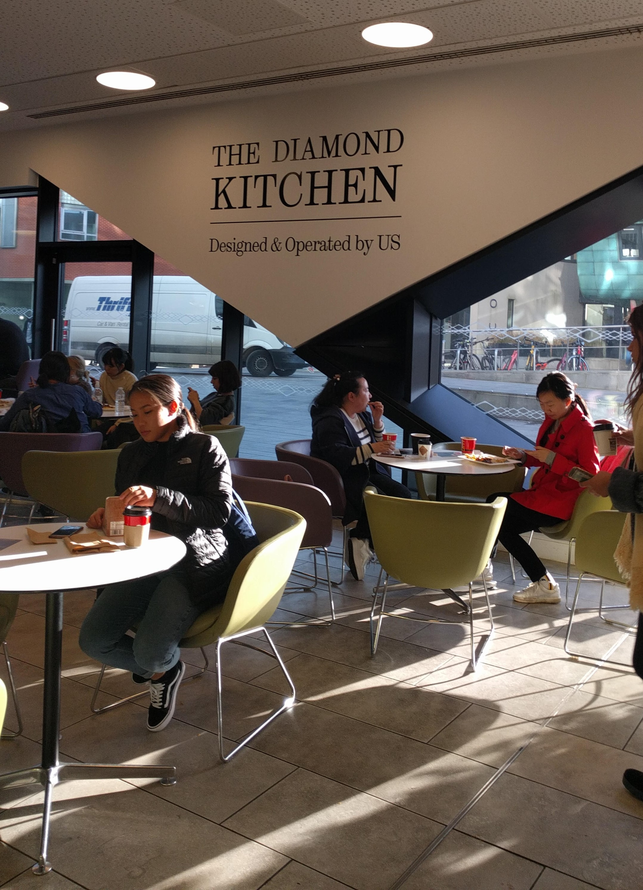
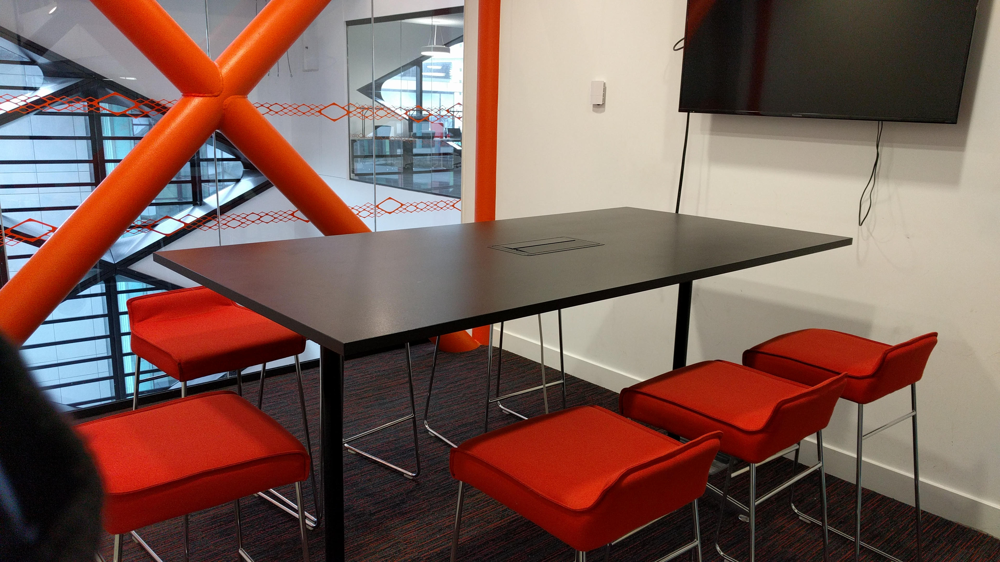
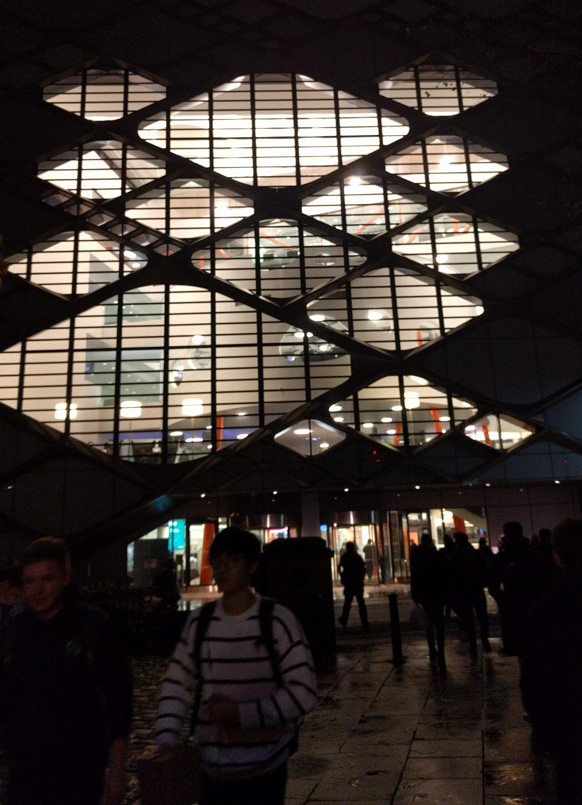

A Day in the Life of a Computer Science Student
In the morning, you might expect to have lecture or two before lunch (on some days). As a Faculty of Engineering Student, you’ll take advantage of some of the newest lecture theatres owned by the University – situated below ground level in the Diamond. There is a total of 7 larger-sized lecture theatres underground, and there are smaller lecture theatres located behind the turnstiles on the 1st floor.
At lunch, you’ll want to grab a bite to eat – you could try the Diamond Café/Kitchen on the ground floor to the left of the main entrance. You can see our web page dedicated to Diamond Café/Kitchen here for everything you might need to know about the Café.
After lunch, you may need somewhere to work individually before your next lecture:
- For quick tasks like printing or emailing, the MindSphere Lounge is perfect. There is space to work if you need it, and there are a few computers and printers for quick use. You can also borrow and return library books here.
- For reasonably short periods of time, you’ll likely be using a general study space. There is one after the turnstiles on the 1st floor, and smaller spaces on the 3rd and 4th floors are available if needed.
- For longer periods of time, you could utilise the silent study areas, the larger of which is on the 4th floor (it accounts for a whole side of the floor), and there is extra space on the 3rd floor too.
After that, you will probably be in another lecture at some point – so it’s time to head back to the underground level. If you don’t feel like walking up and down the stairs you can always take the lift. There is stair-free access throughout the building.
For some of your modules you may be working as a group, and so after your lectures is a perfect time to schedule group meetings in one of the group rooms in the Diamond.

The group rooms on the 3rd and 4th floor are bookable online up to 2 days in advance online. The rooms vary in size, however they all have a flat-screen television and boardroom-style layout.
If you don’t have a laptop to bring in to the room to connect to the television then worry not, as you can use the automated station for borrowing a laptop for up to 24 hours, for use within the Diamond. These laptops are connected to the University’s system so you can benefit from using any of the software available on regular University machines.
After a long, and probably tiring day, it's time to head home...
